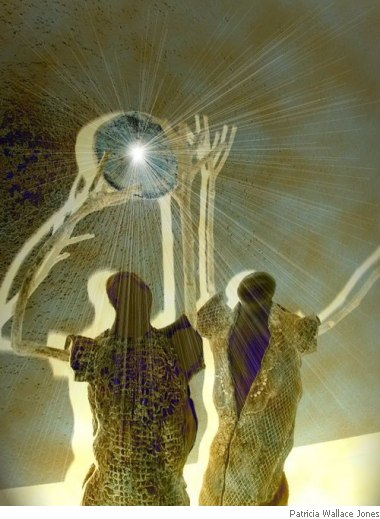

Samuel Prince
Fluffed Lives of the Tragediennes
They are the failed luminaries of centre stage,
the pseudo tragic tragediennes:
Jocastas who have taken celibacy vows,
Cleopatras with phials of antivenom,
coveting premiere review plaudits,
and a bevy of green-eyed understudies
up to snide connivance in the darkened wings.
But as violas simmer in orchestra pits, and the stalls
put aside their programmes, these bit-part thesps
ply their pantomime ignominy in the Winchester
Palace, the Scarborough Grand, with ex-Olympians
and fame-famished has-beens; succumb to scissor
kicking Can-Can tyranny or Jack Sprat’s wisecracks
at the root of giant beanstalks. Seasons pass,
some are tracked down, our perennial courtiers
in the House of Starlets, touring in troupes
in search of a play from Stettin to Trieste.
Whilst come curtain call, others are found by frogmen
having their Ophelia moment: a blouse for modesty,
sunk in the dreck of the Mary Rose,
beneath the thrashed applause of the Solent.
The Familiar
Evidence of witchery on the limestone trail: a piccolo
of bone and pompoms of fur,
how the moor calls for funeral pace: a hounding
of unseen heels or hoof-marks.
You set out from an outlying parish where time is stuck
like a trapped nerve, the memorial plinth tells of sons
who went away. A place too used to no returns.
The Ram bolted from a wrecked Shepherd’s hut, checked
on a crag and assumed an in-a-pulpit-imperiousness,
stared a dare to proceed,
a bidding for a riddle’s solution,
the dense dye-free fleece arrayed of prize shark teeth,
tapered head seemingly soot dunked
and sprouting horns which flared
with the flourish of ampersands.
You caught mention in the market square of a drowning chair
recovered from a lake, the possession of pets, hexes,
and a pentagram daubed on the brewery wall.
The inky sky begins to spill its black artistry,
as brimmed as the high pH bitter
sunk by the locals rapt with the barmaid who mapped
your trek’s route with taps from her sixth finger.

Samuel Prince was born in Dewsbury in 1980. He lives and works in London.
|